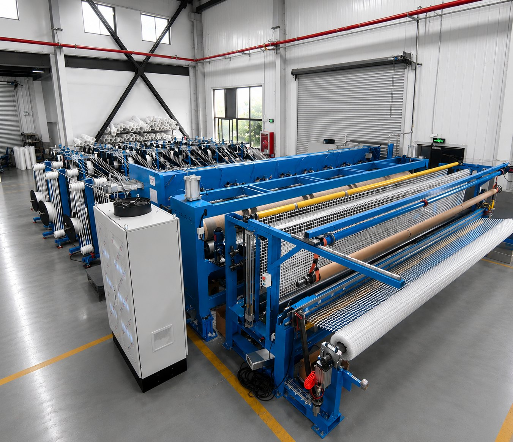
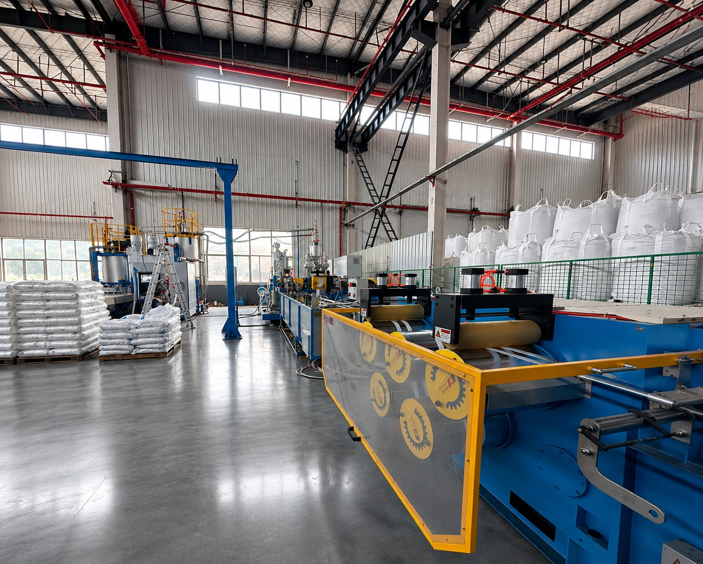

Vertical Integration
Complete Control. Consistent Quality.From raw material formulation to final product, every stage is managed in-house.

Built for Real-World Performance
Gridteck began as a focused initiative combining industrial manufacturing expertise with deep material knowledge in PET and PP systems.
Through over a decade of research and development, we have built a fully integrated production process—translating engineering principles into consistent, real-world performance.
Today, we combine North American management, European partnerships, and advanced manufacturing to deliver geosynthetics that meet global standards and perform across diverse applications.




From raw material formulation to final product, every stage is managed in-house.
Combining North American management with European engineering partnerships.
Tested and applied in demanding environments, meeting global standards.
Our products meet or exceed internationally recognized standards, including:

We maintain strict quality control at every stage – from raw material to finished product – ensuring long term reliability.
Our welding processes are unique within the industry, the result of years of innovation, and translate to more efficient deployments in the field. Our product lines come in 5.75m x 50m/100m standard rolls, optimized for shipping efficiency and rapid deployment.
We control every step of extrusion for PP and PET materials, ensuring consistent tensile performance and resistance to installation damage.

High-speed ultrasonic welding ensures uniform junction strength across the entire geogrid.

Precision laser welding produces high-strength connections for demanding reinforcement applications.
We supply to more than 60 countries across five continents with reliable delivery and local technical support.